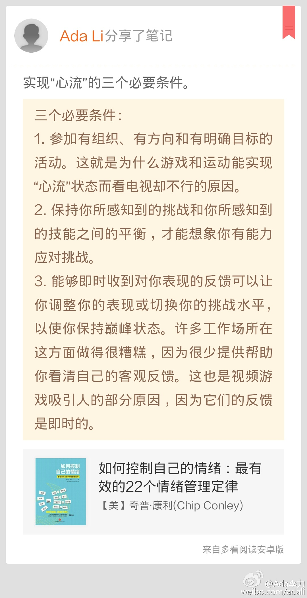

回复@Z西蒙:估计出题人有些轴吧，想给人输灌溉这样的概念：有钱人虽然有钱，但是不快乐。[呵呵]//@Z西蒙:回复@Ada李力:有钱有房子的人不快乐？@Ada李力:给#姣姣#读一篇英文小短文，大意是说钱买不到快乐，快乐来自有爱你的家人和朋友以及帮助别人。之后有这道判断题：拥有很多钱和大房子的人很快乐，姣姣回答说“True”，翻了答案才承认答错了。[呵呵]
实现“心流”的三个必要条件。//#多看笔记# “三个必要条件： 1. 参加有组织、有方向和有明确目标的活动。这就是为什么游戏和运动能实现“心流”状态而看电视却不行的原因。 2. ... ” 摘自《如何控制自己的情绪：最有效的22个情绪管理定律》@多看阅读 网页链接 
#中年危机#的出处原来出自荣格。如果一贯真实地做自己，估计就不会有中年危机了吧。//#多看笔记# “卡尔·荣格认为，在我们中年的某个时期，“深埋在个性下的自我觉知的星星之火开始变... ” 摘自《如何控制自己的情绪：最有效的22个情绪管理定律》@多看阅读 网页链接
真实性=自我觉知×勇气@Ada李力:#中年危机#的出处原来出自荣格。如果一贯真实地做自己，估计就不会有中年危机了吧。//#多看笔记# “卡尔·荣格认为，在我们中年的某个时期，“深埋在个性下的自我觉知的星星之火开始变... ” 摘自《如何控制自己的情绪：最有效的22个情绪管理定律》@多看阅读 网页链接